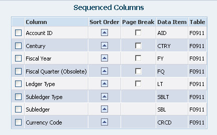
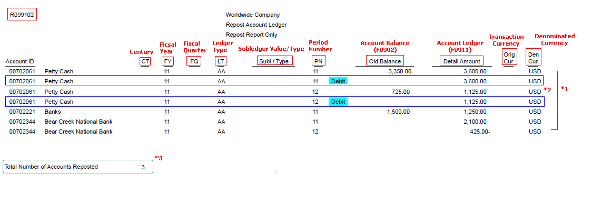

| Purpose |
| Overview |
| Scope |
| Details |
| Functionality |
| Setup |
| Processing Options |
| Data Selection |
| Data Sequencing |
| Reviewing the Report |
| Resolving the Integrity |
| Frequently Asked Questions |
The Repost Account Ledger Integrity Report (R099102):
If any discrepancies are reported while running Repost (R099102) report, it is strongly recommended to run the R09705 report (Overview of Account Balance to Transaction Integrity Report (R09705)) as well. The R099102 and R09705 reports are complementary to each other. The first fetches the F0911 records and compares to the F0902 where the second fetches the F0902 records and then compares to the F0911.
This document provides an overview of the Repost Account Ledger Integrity Report (R099102) including the overview, program functionality, setup, information on reviewing and resolving the integrity report, and frequently asked questions.
Repost Account Ledger (R099102) searches the Account Ledger (F0911) for posted transactions meeting the data selection criteria. For each transaction found, a running total by account is calculated and sorted by G/L date (period). The running total for each account with transactions in the F0911 table is compared to the account period balance for the corresponding account in the F0902 table. It will print the discrepancies with accumulated totals from F0911 and F0902 tables when run in proof mode. In final mode, it will update the F0902 record with the posted amounts from F0911 table as shown in proof mode.
In prior releases i.e. Xe and ERP 8.0, additionally it would calculate a new Balance Forward amounts in the Account Balances table (F0902), which eliminates the need to run an Annual Close (R098201) after restating amounts to a new fiscal date pattern. In 8.9 and subsequent releases, these processing options are no longer available and after restating F0902 amounts for the new fiscal date pattern, it would be required to run Annual Close explicitly to refresh Balance Forward amounts.
Mode Tab
1. Process Mode
Print Tab
1. Detailed Output
Additionally in Xe/ERP 8.0 releases:
The following processing options calculate a new balance forward amount in the Account Balances (F0902) table, which eliminates the need to run an annual close after restating amounts to a new fiscal date pattern. These processing options are applicable only if you are running the Calculate Fiscal Year and Period Number Report (R099103). If you leave any of these fields blank, balance forward amounts from the oldest pattern remain in the record.
Balance Forward Tab
1. Oldest fiscal year with detail - from
Enter the oldest fiscal year that has supporting transaction details under the fiscal date pattern you are converting from.
2. Conversion century - from
3. First fiscal year with detail - to
Enter the first fiscal year that will have supporting transaction details under the fiscal date pattern you are converting to.
4. Conversion century - to
Using this data selection, R099102 will search the F0911 for posted records (Posted Code = P) in periods 1-14 (Period Number >= 01 and Period Number <= 14). Further, summarized records (Summarized Code <> Y) will be ignored, as will the budget ledger types (Ledger Type = BA, BU) that have no F0911 records. Ledger Type AA is selected and additional ledger types may also be selected. The right operand for Century, Fiscal Year, and Company in the above table are examples and may be changed to meet a user's criteria for reporting/updating a specific year.
Do not change the default Data Sequence as shown below. Altering the same may produce unpredictable results and may also damage the F0902 records.

Detailed Mode

*1 The R099102 report prints the discrepancies for accounts where the accumulated totals from Account Ledger (F0911) does not match with that of Account Balance (F0902).
*2It prints certain lines marked as "Debit" with accumulated totals available in the F0911 table whereas the F0902 balance is blank. Please note that this would only occur after a migration from any of the releases 8.10 and prior since the AND01 - AND14 (Net Debit Posting fields) are the new fields added to F0902 table in 8.11 release and subsequent and hence would be having blank debit values by default.
*3 At the end, the report prints the total number of accounts to be reposted.
NOTE:
For more information on 'Debit' fields, refer to Question 1 in the Frequently Asked Questions on the Repost Account Ledger Integrity Report.
Summarized Mode

Running R099102 report with Processing option (Print tab) - Detailed Output as '1' will suppress the detailed output information for each account being reposted. It will print the sub-heading "Suppress Detailed Output" and will only display a total for number of accounts being reposted.
*1 Run R099102 Repost report in final mode (Processing option Process Mode - '2') to update the existing F0902 Account Balances with F0911 Account Ledger totals.
*2 Running R099102 in final mode will also update the AND01 - AND14 (Net Debit Posting fields) in F0902.
For Frequently Asked Questions, refer to Frequently Asked Questions on the Repost Account Ledger Integrity Report (R099102).